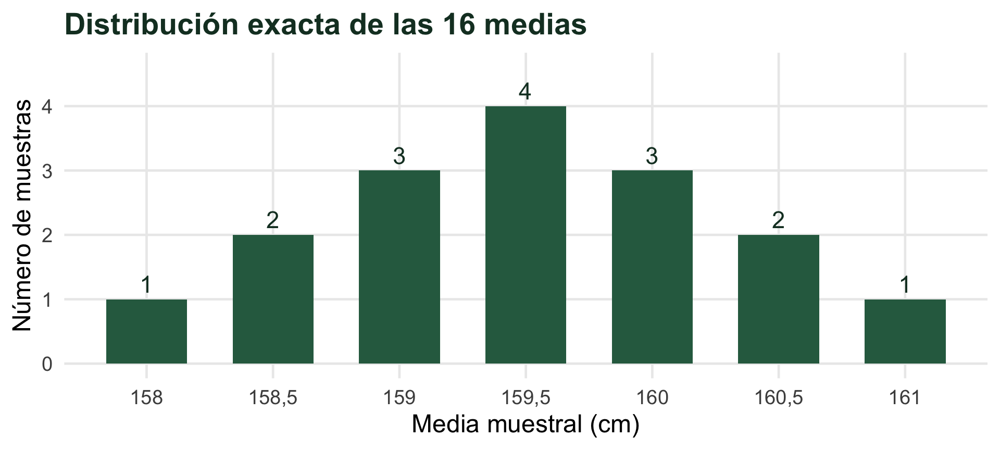
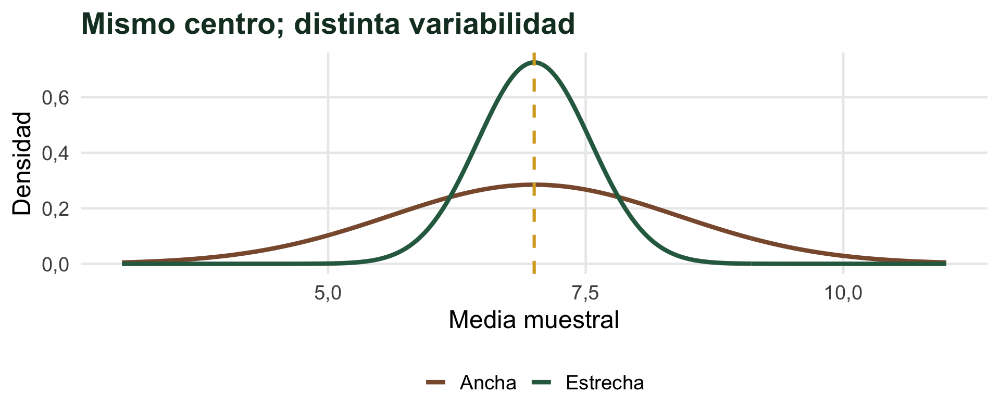
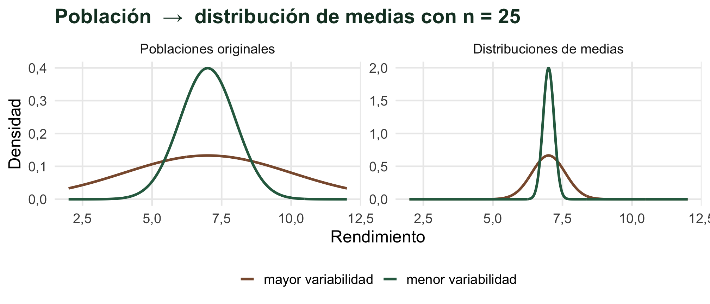
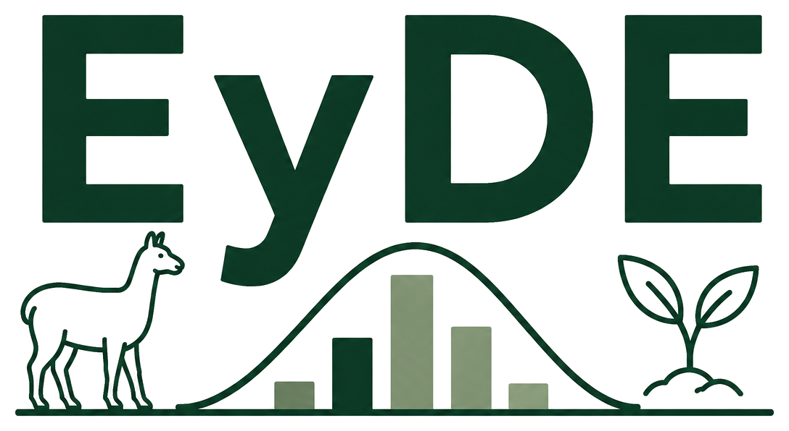

De una muestra a una población
25 de agosto de 2026
¿Podemos medir todas las parcelas de esa población?
Medir todas las unidades sería realizar un censo. Como suele ser costoso, inaccesible o impracticable, seleccionamos una muestra.
Hasta ahora aprendimos a describir los datos que tenemos y a calcular probabilidades. Ahora queremos aprender sobre algo que no observamos completamente.
¿Qué información de la población podremos recuperar a partir de esa muestra?
¿Qué nos permite decir 7,3 t/ha acerca de \(\mu\)?
Usamos un valor calculado en una muestra para estimar una característica desconocida de la población.
Si todavía no tomamos la muestra, ¿qué valor obtendremos para \(\bar{x}\)?
No lo sabemos: depende de qué muestra resulte seleccionada.
La variabilidad muestral no es un error de cálculo: es una consecuencia natural de observar sólo una parte de la población.
La colección de medias revela un nuevo patrón.
Antes de observar la muestra no sabemos qué valor tendrá el estadístico. Por eso, \(\bar{X}\) es también una variable aleatoria.
¿Son la misma distribución?
Una distribución muestral es la distribución de los valores que puede tomar un estadístico (\(\bar{X}\), \(p\), \(\Delta\bar{X}\), \(\Delta p\), …) al obtener muestras aleatorias repetidas del mismo tamaño de una población.
Una muestra es un conjunto de datos; una distribución muestral describe cómo cambia un estadístico entre muestras.
Como la población es diminuta, podemos enumerar todas las muestras posibles.

La media muestral varía entre muestras, pero su distribución está centrada en la media poblacional.

¿Con cuál esperaríamos estimaciones más precisas?
El error estándar es la desviación estándar de la distribución muestral de un estimador. Para el caso de la media muestral:
\(S_{\bar{x}}\) es el error estándar estimado de la media. Expresa cuánto tienden a variar las medias muestrales entre muestras.
No garantiza cuánto se aleja una estimación particular del verdadero parámetro.
\[\operatorname{Var}(\bar{X})=\operatorname{Var}\left(\frac{X_1+\cdots+X_n}{n}\right)=\frac{\sigma^2}{n}\] \[\sigma_{\bar{X}}=\sqrt{\operatorname{Var}(\bar{X})}=\frac{\sigma}{\sqrt n}<\sigma\quad(n>1)\]
Promediar reduce la variabilidad.

Con el mismo \(n\), una población más variable produce una distribución muestral más ancha.
Si los datos individuales no son normales, ¿qué pasa con las medias muestrales?
Si tomamos muestras aleatorias suficientemente grandes de una población con media \(\mu\) y varianza finita, la distribución muestral de \(\bar{X}\) tiende a una distribución Normal.
FORMA\(\bar{X}\) tiende a ser NormalEste es el aporte central del TCL.
CENTRO\(E(\bar{X})=\mu\)Las medias se centran en la media poblacional.
DISPERSIÓN\(\sigma_{\bar{X}}=\dfrac{\sigma}{\sqrt n}\)Proviene de las propiedades de la media de variables independientes, no del TCL.
¿Qué significa muestras suficientemente grandes?
Históricamente se difundió \(n\approx30\) como una regla práctica para considerar una muestra “grande”, pero el tamaño necesario depende de la forma de la población.
\(n=30\) es una regla práctica tradicional, no es una regla de oro.
Si la población original es Normal, \(\sigma^2\) es desconocida y \(n\) es pequeño, sustituimos \(\sigma\) por \(S\) y usamos la distribución t de Student.
La distribución t corresponde a la cantidad estandarizada, no directamente a \(\bar{X}\).
Observamos una sola muestra y obtuvimos \(\bar{x}=7{,}3\text{ t/ha}\). Pero queremos aprender sobre la media de toda la población, \(\mu\).
Como conocemos cómo se comporta \(\bar{X}\) entre muestras, podemos preguntarnos:
¿Qué tan compatible es nuestro resultado con distintos valores posibles de \(\mu\)?
Cada estimador tiene una distribución muestral que describe cómo varía entre muestras.
Cada estimador tiene su propia distribución muestral y su propio error estándar.
Por ejemplo, \(S_{\bar{x}}\) para la media y \(S_p\) para la proporción.
El Teorema Central del Límite explica por qué la distribución Normal aparece una y otra vez en inferencia.
¿Cómo usamos eso para decir qué valores son plausibles para la media poblacional?

Estadística y Diseño Experimental · UNSa